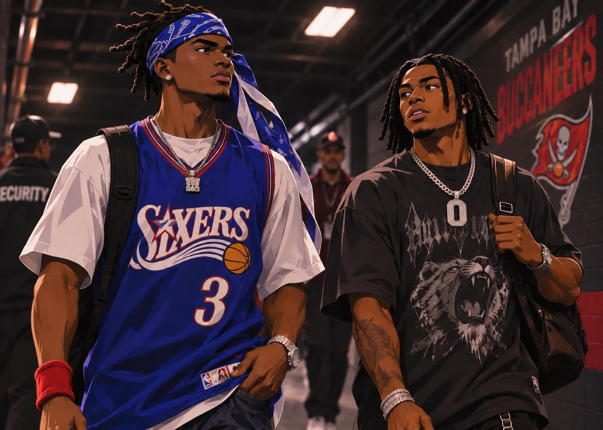
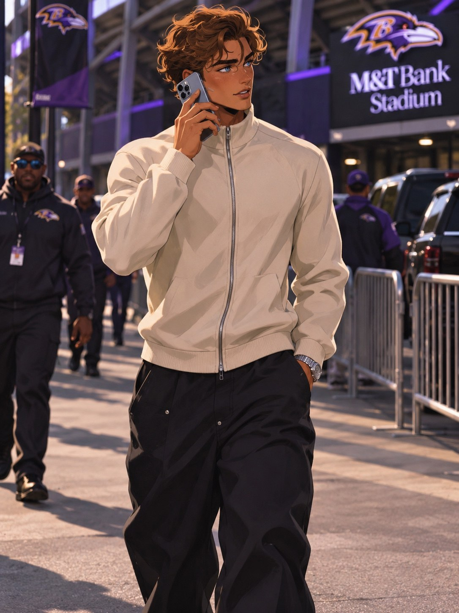
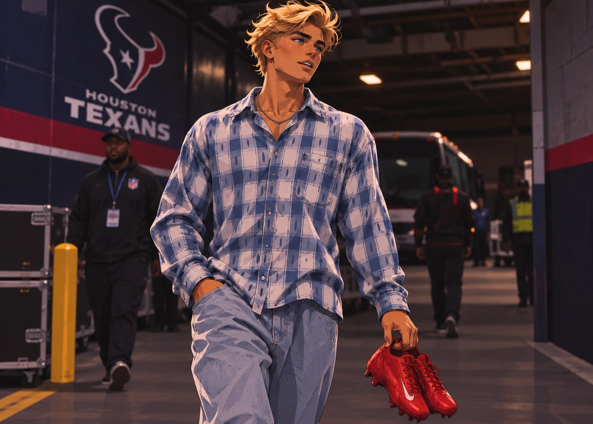
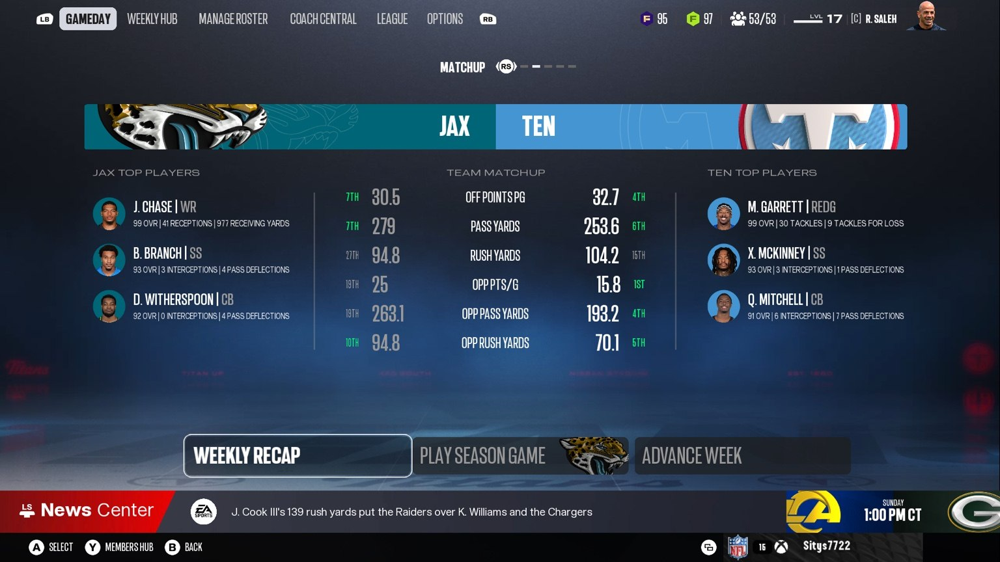
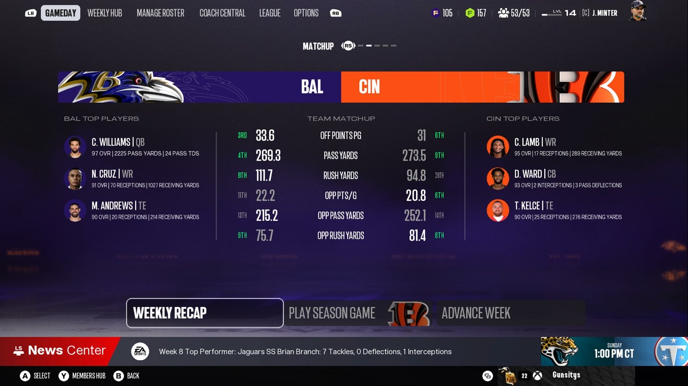

2027 REGULAR SEASON / WEEK 08 / FRANCHISE ARCHIVE
NOBODY
NOBODY
GETS OUT
CLEAN.
Three wins. A rookie quarterback under fire. A receiver who will not slow down. And a Tennessee defense that has made shutting people down look routine. Week 8 is over, but two Week 9 heavyweight matchups are already taking over the conversation.
GB 17 / TB 10BAL 20 / BUF 13TEN 35 / HOU 3
WEEK 08 / OFFICIAL RESULTSTHREE WINS.
THREE WINS.
THREE VERY DIFFERENT STORIES.
The scoreboard is clean. The film is not. Every victory raises a different question about the teams carrying this Madden Universe.
GB 17
FINAL / GREEN BAY AT TAMPA BAYRyan Miller: 142 yards, one TD, two INTPackers win despite being outgained 374 to 274
10 TB
BAL 20
FINAL / BUFFALO AT BALTIMORENasir Cruz: 7 catches, 113 yards, 2 TDBaltimore gains 473 yards and commits zero turnovers
13 BUF
TEN 35
FINAL / TENNESSEE AT HOUSTONDart: 314 yards, 4 TD / Blackwell: 168 yardsTennessee allows Houston just a field goal
3 HOU
LEAGUE WIRE / GREEN BAY survives at 17 to 10 • Baltimore keeps the AFC spotlight • Tennessee answers the Week 2 Houston loss with a defensive masterclass • Two Week 9 games are already circled.
STADIUM ARRIVALS / WEEK 08THE FITS BEFORE
THE FITS BEFORE
THE FOOTBALL.
Three destinations, three entirely different moods. The supplied pregame photos are preserved here, with the original character looks and stadium settings.



GAME 01 / GREEN BAY 17 / TAMPA BAY 10 / SIMULATEDTHE PACKERS
THE PACKERS
ESCAPE. THE QUESTIONS DON'T.
The week the media demanded more passing from Ryan Miller, he actually threw 26 times. The numbers gave his critics more material, not less.
PACKERS / SIXTH WINWINNING
WINNING
IS NOT THE SAME
AS ANSWERING.
Ryan Miller: 16 completions on 26 attempts, 142 passing yards, one touchdown, two interceptions, a 56.8 rating and three sacks.
Jahmyr Gibbs: 18 carries, 82 rushing yards and one touchdown. He mattered, but he did not singlehandedly explain this win.
GB POINTS
17RYAN PASS YDS
142GIBBS RUSH YDS
82
17RYAN PASS YDS
142GIBBS RUSH YDS
82
Tampa Bay outgained Green Bay 374 to 274. Jared Goff went 18 of 30 for 255 yards and a touchdown without an interception. Chuba Hubbard rushed for 87 yards. Tight end Mason Taylor grabbed nine passes for 89 yards. On raw production, Tampa had more of the football game.
But the Buccaneers lost the turnover battle three to two, and Green Bay got out with a 17 to 10 win. Ryan’s two interceptions are a legitimate problem. The response cannot simply be that Gibbs saved him, either: the running back had a solid 82 yards, not the overwhelming 239 yard eruption of Week 5. The defense and the entire roster absorbed the damage.
The uncomfortable comparison now is with the other rookie stories. Nasir is making his offense bigger every week, and Knox is part of a unit that creates easy possessions for its offense. Ryan is still trying to establish what happens when Green Bay asks him to drive the game himself.
Key player stats
| Player | Att / Rec | Yards | TD | INT / Fum |
|---|---|---|---|---|
| Ryan Miller, GB QB | 16 / 26 | 142 pass | 1 | 2 INT |
| Jahmyr Gibbs, GB HB | 18 rush | 82 rush | 1 | 0 fum |
| Jared Goff, TB QB | 18 / 30 | 255 pass | 1 | 0 INT |
| Chuba Hubbard, TB HB | 18 rush | 87 rush | 0 | 1 fum |
| Mason Taylor, TB TE | 9 rec | 89 rec | 0 | 0 fum |
| S. Williams, TB | 1 rec | 76 rec | 1 | 0 fum |
THE BIG QUESTION: Ryan began the season as an emergency starter while Kyler Murray recovered. Green Bay keeps winning, but after a bye and an expanded passing workload, he produced two interceptions. The battle over his long term starting role is now a fair media conversation, not a settled verdict.
GAME 02 / BALTIMORE 20 / BUFFALO 13 / SIMULATEDTHE RAVENS
THE RAVENS
HAVE MORE THAN ONE ANSWER.
A much tighter final score than the yardage suggests. Baltimore wins with balance, ball security and yet another pair of Nasir Cruz touchdowns.
NC17 / 2027 ROOKIE SEASONSEVEN CATCHES.
SEVEN CATCHES.
TWO SCORES.
NO DRAMA.
Caleb Williams: 25 of 37, 252 passing yards, 2 touchdowns, 0 interceptions. Nasir: 7 catches, 113 yards, 2 touchdowns. Derrick Henry adds 102 rushing yards on 13 carries.
Baltimore finishes with 473 offensive yards, including 221 on the ground, while limiting Buffalo to 248. The Bills reach only 110 passing yards.
CRUZ REC
7CRUZ YDS
113CRUZ TD
2
7CRUZ YDS
113CRUZ TD
2
The 20 to 13 margin disguises a game Baltimore controlled through the middle. The Ravens recorded 21 first downs, nine third down conversions and no turnovers. Buffalo converted only three third downs. No single snap needs to be invented to explain it: the basic arithmetic is brutal.
Nasir has reached 70 receptions and 1,027 receiving yards through Week 8, according to the latest supplied Madden matchup screen. His two touchdowns against Buffalo bring the receiving total to 13 using the prior Week 6 season total and Week 7 and 8 box scores. He is no longer merely a rookie on an exciting team. Opposing defenses are building a weekly plan around him, and it still is not enough to shut him out of the end zone.
Next week may change that. Cincinnati has two legitimate answers on its roster, Denzel Ward and Travis Hunter. Whether the Bengals use one as the primary matchup or involve both in bracket coverage will be the biggest tactical story of the Ravens’ first Cincinnati meeting this year.
Key player stats
| Player | Att / Rec | Yards | TD | INT |
|---|---|---|---|---|
| Caleb Williams, BAL QB | 25 / 37 | 252 pass | 2 | 0 |
| Nasir Cruz, BAL WR | 7 rec | 113 rec | 2 | 0 |
| Derrick Henry, BAL HB | 13 rush | 102 rush | 0 | 0 |
| T. Northrup, BUF QB | 11 / 30 | 110 pass | 1 | 0 |
| Mark Andrews, BAL TE | 5 rec | 45 rec | 0 | 0 |
AFTER THE GAME / FICTIONAL MEDIA SCRUM
YES, HE IS ACTUALLY A MARVEL FAN.
His Loki for MVP costume is still getting attention a week after Halloween. The rookie gives the reporters something besides routes and stat lines to ask about.
Reporter (curious)
Nasir, people are still talking about the Loki costume, especially the MVP pin. Are you actually a Marvel fan or did you just like the joke?
Nasir Cruz (grinning)
Nah, I am a Marvel fan for real. The costume was funny, sure, but I had that one planned. Loki for President was too perfect once somebody showed me the MVP standings.
Reporter (teasing)
You still wearing the campaign pin after Caleb threw for another 252 yards and two touchdowns?
Nasir Cruz (laughing)
What? Democracy does not stop because we change clothes. Caleb is my guy. We are winning, he is balling, I am balling. Everybody happy.
Reporter (smiling)
What are you most looking forward to from Marvel?
Nasir Cruz (excited)
Doomsday, easy. I cannot wait. I am trying to see what they do with everybody. But I am not giving you theories on camera because somebody is gonna clip this and hold me to it.
Reporter (one more)
And the two touchdowns today? Is there a superhero comparison you like?
Nasir Cruz (playful)
Man, let me be a receiver for one night. I already dressed like a god last week.
GAME 03 / TENNESSEE 35 / HOUSTON 3 / SIMULATION RECAPREVENGE DIDN'T
REVENGE DIDN'T
NEED A SPEECH.
In Week 2, Houston beat Tennessee 44 to 21. In Week 8, Tennessee returned the favor and left the Texans with a single field goal. The original user played Week 8 session was not saved, so the displayed box score and this recap use the completed simulation result.
TITANS / DEFENSIVE IDENTITYTHREE
THREE
POINTS.
THAT'S ALL.
Jaxson Dart: 22 of 32 for 314 yards, four touchdowns, no interceptions and a 139.8 passer rating.
J.T. Blackwell: nine catches, 168 yards and two touchdowns, with 106 yards after the catch.
Lachlan Knox: six solo tackles, two assists, eight total. A busy, physical cornerback performance without a credited interception or pass deflection.
HOUSTON POINTS
03DART TD
04KNOX TACKLES
08
03DART TD
04KNOX TACKLES
08
The story starts in Week 2. The Texans’ 44 to 21 win remains Tennessee’s worst result of this eight week stretch. The rematch is the kind of result that completely reframes a team. Tennessee scored 35 points while Houston went scoreless in the first half and managed only three points in the entire game. Houston finished with 283 offensive yards and one turnover; Tennessee had 380 yards and zero giveaways.
Jaxson Dart was outstanding. Of his 314 passing yards, 168 went to rookie receiver J.T. Blackwell, who added two touchdowns. A.J. Brown and Tavarius Seawright also caught touchdown passes. There is no evidence the offense has to choose between being balanced and being explosive. Tennessee can score in different ways while its defense suppresses the opposition.
Knox’s stat line matters because it does not need an interception to be meaningful. He had eight total tackles, six solo and two assists. The user established coverage record remains the real selling point: no wide receiver has exceeded 50 yards against Knox when he has been the covering defender. That is a coverage matchup claim, not a claim that every opposing receiver has been held below 50 total yards.
Key player stats
| Player | Att / Rec | Yards | TD | INT / Def |
|---|---|---|---|---|
| Jaxson Dart, TEN QB | 22 / 32 | 314 pass | 4 | 0 INT |
| J.T. Blackwell, TEN WR | 9 rec | 168 rec | 2 | 106 RAC |
| A.J. Brown, TEN WR | 3 rec | 42 rec | 1 | 0 |
| Tavarius Seawright, TEN HB | 3 rec | 21 rec | 1 | 0 |
| Lachlan Knox, TEN CB | 6 solo + 2 ast | 8 tackles | 0 | 0 INT, 0 PD |
| D. Jones, HOU QB | 23 / 36 | 201 pass | 0 | 1 INT |
DEFENSIVE RUN: Tennessee has two shutouts in its first eight games and four games allowing single digit scores. Across its Week 1 through Week 8 results, it has allowed 127 total points, an average of approximately 15.9 per game. Week 9 brings back the opponent the Titans shut out 35 to 0 in Week 5.
ESPN FIRST TAKE / MONDAY MORNING / FICTIONAL STUDIO SEGMENTTHREE WINS.
THREE WINS.
ONE BIG ARGUMENT.
Stephen A. Smith, Ryan Clark, Dan Orlovsky and Marcus Spears debate whether Green Bay is being carried, whether Baltimore has a weakness and whether Tennessee is the most complete team in football.
FIRST TAKE / WEEK 08
Shae Cornette, Stephen A. Smith, Ryan Clark, Dan Orlovsky, Marcus SpearsScripted analyst discussion set inside the Madden Universe
Shae Cornette (opening)
Week 8 is over, and all three teams won again. But they did not win the same way. Green Bay scored 17 while Ryan Miller threw two interceptions. Baltimore had 473 yards of offense and Nasir Cruz scored twice. Tennessee answered the Texans with a 35 to 3 demolition. Where are we starting?
Stephen A. Smith (emphatic)
Green Bay. Because we have been asking for WEEKS whether Ryan Miller can make an offense better. He just attempted 26 passes, finally got the volume everybody wanted, and what happened? One touchdown, two picks and a 56.8 passer rating! The Packers won because the rest of their football team would not let them lose.
Dan Orlovsky (technical)
And the efficiency concerns are real. Sixteen completions for 142 yards is 5.5 per attempt. Three sacks. When you throw that many short passes, you cannot also give away two possessions. But I do want to push back on the idea that Gibbs carried this specific game alone. He was good, 82 rushing yards and a touchdown. It was the defense and the overall turnover margin that tipped it.
Ryan Clark (firm)
Exactly. Tampa generated 374 offensive yards to Green Bay’s 274. Goff threw for 255 and did not throw a pick. Tampa still had three total turnovers. Green Bay played complimentary football and survived a quarterback performance that will not beat the best playoff teams.
Stephen A. Smith (challenging)
And we have got Kyler Murray in that building. I am not saying make a change tonight. I am saying the rookie has to make the next decision easy, not harder. Seven or eight weeks of winning do not give you a lifetime pass from criticism.
Shae Cornette (turning)
Now Baltimore. Caleb Williams delivers another clean outing, Nasir has 113 receiving yards and two touchdowns, but the Ravens also run for 221. Does this offense actually have an answer for every defense?
Dan Orlovsky (analytical)
Baltimore is forcing defenses into impossible tradeoffs. Play light to account for Nasir being moved around, and Derrick Henry goes 13 for 102. Load up to stop the run, and Caleb can distribute it to the most dangerous receiver on the field. No turnovers in this one. That is a repeatable identity.
Ryan Clark (skeptical)
It is a really good identity. But 20 points, not 40, against Buffalo is a reminder that the Ravens can win ugly too. The defense held the Bills to 110 passing yards. Against Cincinnati next week, that secondary is going to face a completely different workload.
Stephen A. Smith (rising)
Now Tennessee! This is what a contender does. Houston embarrassed them 44 to 21 back in Week 2. They see them again and go win 35 to 3. I do not care if your offense is explosive; when your defense is holding teams to almost nothing, you are the team nobody wants to see in January.
Marcus Spears (excited)
Give Jaxson Dart and J.T. Blackwell their credit. Dart puts up 314 and four touchdowns, Blackwell has 168 and two scores. But the thing that leaps off the page is Tennessee’s defensive culture. Knox has eight tackles at corner and no pass breakups. That means he was participating in the whole game, not that somebody had a field day on him.
Shae Cornette (closing)
And in Week 9 we get the rematch everybody wanted: Knox against Ja’Marr Chase. Plus Nasir Cruz against a Bengals secondary that can roll out Denzel Ward and Travis Hunter. That is coming up next.
NIGHTCAP / SHANNON SHARPE + CHAD JOHNSON / FICTIONAL REACTIONONE CORNER
ONE CORNER
AIN'T ENOUGH.
Cincinnati has Denzel Ward and Travis Hunter. Shannon wants both of them assigned to Nasir. Ocho knows exactly why that is easier said than done.
NIGHTCAP
Shannon Sharpe and Chad “Ocho” JohnsonFilm, route leverage and an argument over double coverage
Shannon Sharpe (animated)
Ocho, I want to talk about the Bengals game next week. They got Denzel Ward. They got Travis Hunter. Very nice. Very talented. Put BOTH of them on Nasir Cruz.
Chad Johnson (laughing)
Unc! You cannot just park two cornerbacks on one receiver every play! The young man is in motion. He is outside. He is in the slot. They hand him the football. By the time you find him, he is somewhere else.
Shannon Sharpe (insistent)
THEN FOLLOW HIM! I am sorry, Ocho. One ain’t enough. You saw Week 5? Sixteen catches for THREE HUNDRED SIXTEEN yards and three touchdowns. Week 7 he played TWO QUARTERS and had 211 receiving yards plus two rushing touchdowns. Week 8? Seven for 113 and two more touchdowns. What else you need to see?
Chad Johnson (grinning)
That is what makes it hard! Man is catching jump balls, running by people, and getting carries. You cannot just say bracket number 17 and expect him to stand still for you. He has the routes and the releases to beat a cloud, then they motion him away from your help.
Shannon Sharpe (waving)
I do not care if you call it cloud, bracket, a committee meeting, whatever. Put Ward here, Hunter there, and a safety over the top. If that leaves somebody else open, congratulations, at least you made Caleb throw it to somebody OTHER than this man.
Chad Johnson (cackling)
And then Caleb hands it to Derrick Henry. You just put everybody in the passing lanes. He is smiling. That is the problem, Unc!
Shannon Sharpe (laughing)
Well they better do SOMETHING! Because every Sunday we come in here and somebody else is explaining why they thought one guy could guard Cruz.
Chad Johnson (serious)
And do not disrespect Ward or Hunter. They are both real corners. Denzel knows how to play the ball. Travis can run with anybody. The question is not whether they are talented; it is whether Cincinnati can make the coverage look different after the snap.
Shannon Sharpe (turning)
And that is just Baltimore. Next week Chase has to walk back into Tennessee and see Fort Knox again. Four red zone tries the last time, and that door did not open.
Chad Johnson (competitive)
Chase is too good to count out. He had 81 total yards in that first matchup, but only 37 against Knox directly. You know he remembers every one of those red zone targets. I want to see the adjustment. That is a REAL receiver versus corner chess match.
Shannon Sharpe (signoff)
We got a loaded Week 9, Ocho. Get the film ready. Do not come here telling me you are leaving 17 or number 1 on an island without some help.
WHAT THE NUMBERS SUPPORT: Nasir posted 16 catches, 316 yards and three receiving touchdowns in Week 5, then 211 receiving yards in one half in Week 7, and 113 yards with two receiving touchdowns in Week 8. Ward and Hunter are excellent defenders, but Baltimore’s motion and rushing attack complicate every double team.
NEXT WEEK / WEEK 09 / MATCHUP DESKTWO SHOWDOWNS.
TWO SHOWDOWNS.
NO HIDING.
Tennessee gets Ja’Marr Chase again. Baltimore gets its first test against this Bengals roster. Here are the storylines, the tactical questions and editorial projected betting style lines.
GAME TO WATCH 01 / AFC SOUTH / JACKSONVILLE AT TENNESSEE
CHASE VS FORT KNOX.
This is not just another divisional game. Tennessee shut Jacksonville out 35 to 0 in Week 5. The Jaguars kept trying Ja’Marr Chase near the goal line, including four attempts against Knox that did not produce a touchdown. Chase finished the day with 81 total receiving yards but only 37 directly against Knox. Now Jacksonville gets a second try.
THE MATCHUP / WHO HAS THE EDGE?
BEST ON BEST.

Jacksonville enters with a potent offense led by Bryce Young, Ja’Marr Chase, Brian Branch and Devon Witherspoon on the opposite side. The matchup screen lists Jacksonville at 30.5 points per game and 279 passing yards per game.
Tennessee is scoring 32.7 points per game, fourth in the league, while allowing 15.8 points per game, first in the league, per the supplied pregame screen. The Titans rank near the top against the pass and run while Dart is producing explosive games.
Chase is not an ordinary opponent. He has 41 catches and 977 receiving yards on the supplied upcoming matchup screen. But Knox’s season long coverage standard and the four shut down red zone targets from the first meeting are why the rematch has its own headline.
FIRST TAKE EARLY PICKS
Marcus Spears: Titans 30, Jaguars 17. Tennessee’s defensive line and coverages force Jacksonville to execute patiently.
Ryan Clark: Titans 27, Jaguars 24. Chase will make adjustments, but Tennessee’s front is the difference late.
Marcus Spears: Titans 30, Jaguars 17. Tennessee’s defensive line and coverages force Jacksonville to execute patiently.
Ryan Clark: Titans 27, Jaguars 24. Chase will make adjustments, but Tennessee’s front is the difference late.
MADDEN UNIVERSE / EDITORIAL MARKET PROJECTIONS
PROPS AND LINES.
TITANS FAVORED BY 6.5GAME TOTAL 49.5
Jaxson Dart passing yardsO/U 252.5
J.T. Blackwell receiving yardsO/U 73.5
Ja’Marr Chase total receiving yardsO/U 86.5
A.J. Brown receiving yardsO/U 51.5
Bryce Young passing yardsO/U 234.5
Lachlan Knox total tacklesO/U 4.5
These are hypothetical pregame lines, not sportsbook offers. The estimates account for season production, prior matchup results and Tennessee’s highly ranked defense. Chase’s number means total receiving yards, not yards gained solely while Knox is covering him.
KEY TACTICAL QUESTION: Can Jacksonville move Chase away from Knox or create enough space with shifts, stacked releases and route combinations? A bigger Chase box score would not automatically mean Knox lost his individual matchup.
GAME TO WATCH 02 / AFC NORTH / BALTIMORE AT CINCINNATI
ONE MAN OR TWO?
Baltimore’s first head to head meeting with the Bengals this season is also the biggest coverage test of Nasir Cruz’s rookie year. Cincinnati can choose between Denzel Ward and Travis Hunter as the lead matchup. If one is not enough, will the Bengals dare commit both and open the door for Derrick Henry?
THE MATCHUP / HOW DO YOU COVER 17?
WARD. HUNTER. CRUZ.

The Ravens’ supplied matchup screen lists 33.6 points per game and 269.3 passing yards per game. Caleb Williams stands at 2,225 passing yards and 24 touchdowns, while Nasir has 70 receptions for 1,027 yards.
Cincinnati is not outmatched on paper. The Bengals offense can put CeeDee Lamb, Tee Higgins, DK Metcalf and Travis Kelce on the field. Defensively, Ward, Hunter, Talanoa Hufanga and a deep secondary create genuine complexity. Cincinnati’s 31 points per game make it a legitimate shootout threat.
Ward’s experience and Hunter’s movement skills make both plausible primary matchups for Cruz, but no assignment is confirmed. Ocho is right that a receiver who moves through the formation is difficult to bracket for an entire game.
FIRST TAKE EARLY PICKS
Stephen A. Smith: Ravens 34, Bengals 27. He trusts Caleb and Nasir to exploit a defense overloaded with responsibilities.
Dan Orlovsky: Ravens 31, Bengals 30. Cincinnati can cover, but Henry forces the Bengals into run fits that open the passing windows.
Stephen A. Smith: Ravens 34, Bengals 27. He trusts Caleb and Nasir to exploit a defense overloaded with responsibilities.
Dan Orlovsky: Ravens 31, Bengals 30. Cincinnati can cover, but Henry forces the Bengals into run fits that open the passing windows.
MADDEN UNIVERSE / EDITORIAL MARKET PROJECTIONS
PROPS AND LINES.
RAVENS FAVORED BY 3.5GAME TOTAL 54.5
Caleb Williams passing yardsO/U 274.5
Nasir Cruz receiving yardsO/U 112.5
Nasir Cruz anytime touchdownYes / No
CeeDee Lamb receiving yardsO/U 81.5
Derrick Henry rushing yardsO/U 82.5
Tee Higgins receiving yardsO/U 64.5
These are original editorial estimates, not real betting lines. Cruz’s receiving projection uses 1,027 yards in eight weeks, while allowing for Ward, Hunter and expected bracket help. Cincinnati’s scoring average and Baltimore’s explosive offense support the elevated total.
THE SHANNON SHARPE TEST: If one corner cannot take Cruz out of the game, Cincinnati may have to rotate a safety over him. That is only one part of the problem: Baltimore also averages more than 100 yards rushing and has Derrick Henry in the backfield.
MADDEN UNIVERSE / CONTINUITY DESKTHE MASTER
THE MASTER
RECORD.
The franchise history remains connected to the prior editions. These are the Week 5 through Week 8 milestones that set up the next chapter.
| Week | Ravens / Nasir | Titans / Knox |
|---|---|---|
| 05 | W 50 to 43 vs CLE. Nasir 16 catches, 316 yards, 3 TD | W 35 to 0 at JAX. Knox 3 PD, shuts down 4 red zone chances |
| 06 | W 35 to 7 vs SEA. Nasir suffers concussion, exits early | W 33 to 0 vs CAR. Second shutout |
| 07 | W 28 to 14 at IND. Nasir 211 rec yards, 2 rush TD, 1 rec TD in first half | W 37 to 13 at NE. Knox 5 total tackles |
| 08 | W 20 to 13 vs BUF. Nasir 113 yards, 2 TD | W 35 to 3 at HOU. Knox 8 tackles, Dart 4 pass TD |
| Week | Green Bay / Ryan Miller | Key takeaway |
|---|---|---|
| 05 | W 34 to 31 vs MIN. Gibbs returns with 239 rush yards, 4 total TD | Debate shifts to whether Ryan is being protected |
| 06 | W 31 to 27 vs DET. Ryan 155 pass yards, 1 INT, Gibbs 122 rush yards | Run game dominates the conversation |
| 07 | BYE | A chance to adjust the offense |
| 08 | W 17 to 10 at TB. Ryan 142 pass yards, 1 TD, 2 INT | Packers win despite quarterback mistakes |
Records through Week 8, based on the supplied schedule: Ravens 7 wins and 1 loss, Titans 7 wins and 1 loss, Packers 6 wins and 1 loss following their bye. Figures from user supplied franchise results, not the real NFL.
WEEK 09 / NEXT EDITIONTWO GAMES.
TWO GAMES.
ALL THE PRESSURE.
Knox versus Chase. Cruz versus Ward or Hunter. Green Bay waits for the next chance to answer the quarterback question.
BACK TO THE SEASON HUB